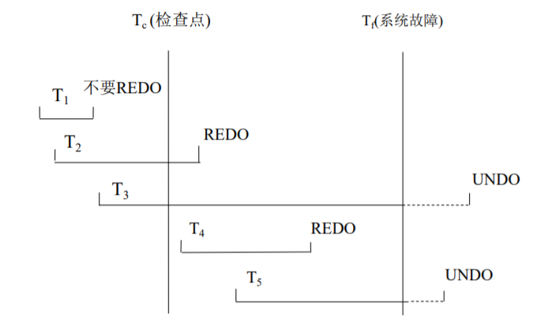

2. restoration
1. 故障分类
- 事务故障: 有两种错误可能导致事务执行失败
- 逻辑错误: 由于事务本身的内部条件而无法正常执行，如非法输入、找不到数据、溢出等
- 系统错误: 系统进入不良状态 (如死锁)，导致事务无法正常执行
- 系统崩溃: 硬件故障，或者数据库软件或操作系统的漏洞，导致易失性存储器内容的丢失，并使得事务处理停止，而非易失性存储器仍完好无损
- 磁盘故障: 在数据传送操作过程中由于磁头损坏或故障造成磁盘块上的内容丢失
2. 基于日志的数据库恢复
(1). 基本概念
日志记录的种类:
- $\small\mathsf{\langle T,\ start\rangle}$ : 事务 $\small\mathsf{T}$ 已开始
- $\small\mathsf{\langle T,\ commit\rangle}$ : 事务 $\small\mathsf{T}$ 成功完成
- $\small\mathsf{\langle T,\ abort\rangle}$ : 事务 $\small\mathsf{T}$ 未成功完成，被中止
- $\small\mathsf{\langle T,\ X,\ V_{old},\ V_{new}\rangle}$ : 更新操作
无论何时，应该在数据库被修改之前把更新记录写入日志。
恢复涉及的操作：
- $\small\mathsf{Redo(T)}$ : 重做，将 $\small\mathsf{T}$ 更新过的数据项都设为 $\small\mathsf{V_{new}}$。
- $\small\mathsf{Undo(T)}$ : 回滚，将 $\small\mathsf{T}$ 更新过的数据项都恢复为 $\small\mathsf{V_{old}}$；执行后把 $\small\mathsf{\langle T,\ abort\rangle}$ 写入日志，表明撤销完成
(2). 推迟更新技术
推迟更新 (
- 在日志中记录所有更新操作 $\small\mathsf{\langle T,\ X,\ V_{new}\rangle}$，并把所有更新操作推迟到
commit 时执行 - 如果在
commit 之前发生故障，由推迟更新的特性，删除日志中有关此事务的信息即可
- 从后向前扫描日志，建立两个事务表
- 提交事务表: 包含已提交的事务，
i.e. 日志中包含 $\small\mathsf{\langle T,\ commit\rangle}$ - 未提交事务表: 包括全部具有 $\small\mathsf{\langle T,\ start\rangle}$ 且不具有 $\small\mathsf{\langle T,\ commit\rangle}$ 的事务
- 对提交事务表中的每个事务
T ，执行Redo(T) - 对未提交事务表中的每个事务
T ，删除T 的日志记录，待以后重新启动执行
(3). 即时更新技术
即时更新 (
- 允许事务直接修改数据库
- 在更新记录 $\small\mathsf{\langle T,\ X,\ V_{old},\ V_{new}\rangle}$ 被写到日志中后，才能更新数据库或提交
- 从后向前扫描日志，建立两个事务表
- 提交事务表: 包含已提交的事务，
i.e. 日志中包含 $\small\mathsf{\langle T,\ commit\rangle}$ - 未提交事务表: 包括全部具有 $\small\mathsf{\langle T,\ start\rangle}$ 且不具有 $\small\mathsf{\langle T,\ commit\rangle}$ 的事务
- 对提交事务表中的每个事务
T ，执行Redo(T) - 对未提交事务表中的每个事务
T ，执行Undo(T) ，并把 $\small\mathsf{\langle T,\ abort\rangle}$ 写入日志，表明撤销完成
(4). 检查点技术
前面的恢复算法存在以下问题:
- 搜索整个日志的过程耗时
- 大多数事务执行的修改已经生效，但还是要
Redo 它们
- 将位于主存的所有日志输出到稳定存储器，将所有修改的缓冲输出到磁盘
- 将日志记录 $\small\langle\mathsf{checkpoint\ L}\rangle$ 输出到稳定存储器，其中 $\small\mathsf{L}$ 是检查点执行时正活跃的事务列表
- 检查点执行过程中，不允许任何事务执行更新
- 检查点前完成的事务必然已写入数据库中，因此无需考虑对它们
Redo、Undo - 对于
L 中的事务以及 $\small\langle\mathsf{checkpoint\ L}\rangle$ 写入日志记录后才开始的事务，需要考虑Redo、Undo
- 系统找到最后一条 $\small\langle\mathsf{checkpoint\ L}\rangle$ 记录
- 对于
L 中的事务以及 $\small\langle\mathsf{checkpoint\ L}\rangle$ 写入日志记录后才开始的事务 $\small\mathsf{T_i}$: - 若日志中没有 $\small\mathsf{\langle T_i,\ commit\rangle}$ 或 $\small\mathsf{\langle T_i,\ abort\rangle}$，执行 $\small\mathsf{Undo(T_i)}$
- 否则执行 $\small\mathsf{Redo(T_i)}$

3. 通用恢复算法
回滚操作步骤:
- 从后往前扫描日志，如果发现形如 $\small\mathsf{\langle T,\ X,\ V_{old},\ V_{new}\rangle}$ 的记录，回滚这个操作的同时，往日志中写一个
redo-only 的补偿记录 $\small\mathsf{\langle T,\ X,\ V_{old}\rangle}$ - 一旦扫描到 $\small\mathsf{\langle T_i,\ start\rangle}$ 记录，就往日志中写一个 $\small\mathsf{\langle T_i,\ abort\rangle}$
恢复算法:
① 重做阶段:
- 从最后一个
checkpoint 开始正向扫描日志，并将undo-list 初始化为L 列表 - 一旦遇到正常记录 $\small\mathsf{\langle T,\ X,\ V_{old},\ V_{new}\rangle}$ 或
redo-only 记录 $\small\mathsf{\langle T,\ X,\ V_{old}\rangle}$，重做它们
(尽管浪费，但简化了恢复过程) - 若发现形如 $\small\mathsf{\langle T_i,\ start\rangle}$ 的记录，将 $\small\mathsf{T_i}$ 加到
undo-list - 若发现形如 $\small\mathsf{\langle T_i,\ commit\rangle}$ 或 $\small\mathsf{\langle T_i,\ abort\rangle}$ 的记录，将 $\small\mathsf{T_i}$ 从
undo-list 中删除
- 从后往前扫描日志，若遇到属于
undo-list 中的记录，回滚它 (按上面提到的方式，写一个redo-only 的记录) - 当发现
undo-list 中 $\small\mathsf{T_i}$ 的 $\small\mathsf{\langle T_i,\ start\rangle}$ 记录，就往日志中写一个 $\small\mathsf{\langle T_i,\ abort\rangle}$，并将 $\small\mathsf{T_i}$ 从undo-list 中去掉 - 当
undo-list 为空时，代表系统找到了所有的 $\small\mathsf{\langle T_i,\ start\rangle}$，算法结束